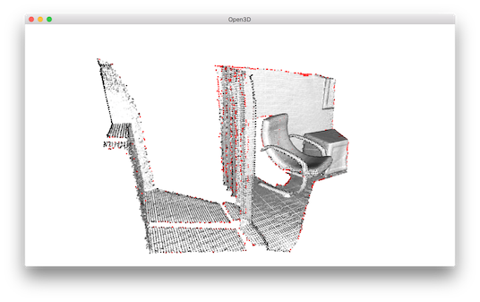
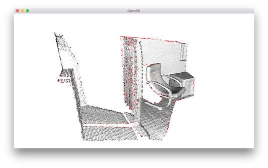

Point cloud outlier removal¶
When collecting data from scanning devices, it happens that the point cloud contains noise and artifact that one would like to remove. This tutorial address outlier removal feature.
5 6 7 8 9 10 11 12 13 14 15 16 17 18 19 20 21 22 23 24 25 26 27 28 29 30 31 32 33 34 35 36 37 38 39 40 41 | # examples/Python/Advanced/outlier_removal.py
import open3d as o3d
def display_inlier_outlier(cloud, ind):
inlier_cloud = cloud.select_down_sample(ind)
outlier_cloud = cloud.select_down_sample(ind, invert=True)
print("Showing outliers (red) and inliers (gray): ")
outlier_cloud.paint_uniform_color([1, 0, 0])
inlier_cloud.paint_uniform_color([0.8, 0.8, 0.8])
o3d.visualization.draw_geometries([inlier_cloud, outlier_cloud])
if __name__ == "__main__":
print("Load a ply point cloud, print it, and render it")
pcd = o3d.io.read_point_cloud("../../TestData/ICP/cloud_bin_2.pcd")
o3d.visualization.draw_geometries([pcd])
print("Downsample the point cloud with a voxel of 0.02")
voxel_down_pcd = pcd.voxel_down_sample(voxel_size=0.02)
o3d.visualization.draw_geometries([voxel_down_pcd])
print("Every 5th points are selected")
uni_down_pcd = pcd.uniform_down_sample(every_k_points=5)
o3d.visualization.draw_geometries([uni_down_pcd])
print("Statistical oulier removal")
cl, ind = voxel_down_pcd.remove_statistical_outlier(nb_neighbors=20,
std_ratio=2.0)
display_inlier_outlier(voxel_down_pcd, ind)
print("Radius oulier removal")
cl, ind = voxel_down_pcd.remove_radius_outlier(nb_points=16, radius=0.05)
display_inlier_outlier(voxel_down_pcd, ind)
|
Prepare input data¶
A point cloud is loaded and downsampled using voxel_downsample.
22 23 24 25 26 27 28 | print("Load a ply point cloud, print it, and render it")
pcd = o3d.io.read_point_cloud("../../TestData/ICP/cloud_bin_2.pcd")
o3d.visualization.draw_geometries([pcd])
print("Downsample the point cloud with a voxel of 0.02")
voxel_down_pcd = pcd.voxel_down_sample(voxel_size=0.02)
o3d.visualization.draw_geometries([voxel_down_pcd])
|
{kind=link}
For comparison, uniform_down_sample can downsample point cloud by collecting every n-th points.
30 31 32 | print("Every 5th points are selected")
uni_down_pcd = pcd.uniform_down_sample(every_k_points=5)
o3d.visualization.draw_geometries([uni_down_pcd])
|
{kind=link}
Select down sample¶
The helper function uses select_down_sample that takes binary mask to output only the selected points.
The selected points and the non-selected points are visualized.
10 11 12 13 14 15 16 17 | def display_inlier_outlier(cloud, ind):
inlier_cloud = cloud.select_down_sample(ind)
outlier_cloud = cloud.select_down_sample(ind, invert=True)
print("Showing outliers (red) and inliers (gray): ")
outlier_cloud.paint_uniform_color([1, 0, 0])
inlier_cloud.paint_uniform_color([0.8, 0.8, 0.8])
o3d.visualization.draw_geometries([inlier_cloud, outlier_cloud])
|
Statistical outlier removal¶
34 35 36 37 | print("Statistical oulier removal")
cl, ind = voxel_down_pcd.remove_statistical_outlier(nb_neighbors=20,
std_ratio=2.0)
display_inlier_outlier(voxel_down_pcd, ind)
|
statistical_outlier_removal removes points that are further away from their neighbors compared to the average for the point cloud. It takes two input parameters:

nb_neighborsallows to specify how many neighbors are taken into account in order to calculate the average distance for a given point.
std_ratioallows to set the threshold level based on the standard deviation of the average distances across the point cloud. The lower this number the more aggressive the filter will be.
{kind=link}
Radius outlier removal¶
40 41 42 | print("Radius oulier removal")
cl, ind = voxel_down_pcd.remove_radius_outlier(nb_points=16, radius=0.05)
display_inlier_outlier(voxel_down_pcd, ind)
|
radius_outlier_removal removes points that have few neighbors in a given sphere around them. Two parameters can be used to tune the filter to your data:

nb_pointslets you pick the minimum amount of points that the sphere should contain
radiusdefines the radius of the sphere that will be used for counting the neighbors.
{kind=link}